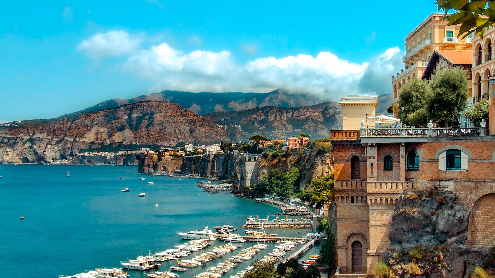

Come visit
Capri, Italia!

Is Capri on your bucket list? If not, it should be!
The island of Capri, Italy is the jewel of southern Italy. It is full of breathtaking, natural beauty—including luxurious beaches and rock formations—and delicious Italian cuisine.
Click here for a brief tour of the island!
Want a glimpse into Camprian life? Visit the Piazza Umberto I!

The Piazza—which is the most famous square of the island—is located in the heart of Capri, Italy. Since Ancient Rome, it has been deemed the center of the town and the meeting point of the island by citizens. The square’s main element is the clock tower, which chimes every fifteen minutes. Surrounding the clock tower are numerous cafés and bars that serve early-morning cappuccino drinkers to late-night, after-dinner digestivo sippers.
Relax on land and at sea!
Below, we have listed some options if you're a land and/or sea lover.
- Beaches
Capri is full of beaches—private and public!
- You can practically plonk your towel anywhere or book a spot at one of Capri’s many private beach clubs that include places to lounge, changing facilities, and typically a restaurant.
- If you’re on a budget, head to Marina Piccola, which has three small beach areas.
- Scenic Hikes
If lying on the beach is not your thing, take a stroll on one of Capri’s many wild hiking trails and walking paths!
- Boat Rides
On a hot summer day, beaches in Capri are usually packed, so the best way to enjoy the refreshing water without the crowds of people is on a boat.
- You can hire a skipper and spend a few hours swimming in rocky coves and emerald-green grottos.
- One-hour tours of the island are available on larger crafts as well.
Looking to try Caprian cuisine? Here’s a short guide to the island’s traditional dishes.

Capri is full of many cafés and restaurants. In these eateries, you can find plenty of pasta and seafood dishes.
- Pasta
- The most famous dish on Capri is ravioli capresi, a light and flavorful meal, made with a simple pasta dough using equal parts flour and water, resulting in a particularly light pasta. The filling is made with parmigiano and aged caciotta cheese, and marjoram, and the cooked ravioli are tossed with a fresh tomato and basil sauce.
- Other of the island's traditional first courses are scialatielli, a fresh ribbon pasta, thicker than tagliatelle, made from a dough of flour, water, parmigiano, chopped fresh basil, and salt, and often served with seafood or sautéed vegetables, and spaghetti alla Nerano, tossed with zucchini and cheese.
- Seafood
- If you are a seafood lover, try ordering local pezzogna, a type of fish very often caught along the shores of Capri and prepared all'acqua pazza, or in a sauce made of cherry tomatoes, parsley, garlic, and extra virgin olive oil.
- Other fish commonly served on Capri are saraghi, dentici, octopus, and totani.
- You can also find excellent local shrimp caught on the sea floor between Capri and Massa Lubrense, which are served sautéed or eaten raw with just a bit of olive oil.
- One of the most beloved dishes on the island, however, is l'impepata di cozze, which is a mussel dish often served as an appetizer, placed at the center of the table to me eaten by everyone in the party.
- Dessert
No meal is complete without dessert!
- If you have a sweet tooth, order a generous slice of torta caprese—a local chocolate and almond cake.
- Most desserts are traditionally served with a small, icy glass of limoncello, so try some...if you're over twenty-one, that is!
{kind=link}
{kind=link}
{kind=link}
{kind=link}
{kind=link}
{kind=link}
{kind=link}
{kind=link}
{kind=link}
{kind=link}
{kind=link}
{kind=link}
{kind=link}
{kind=link}